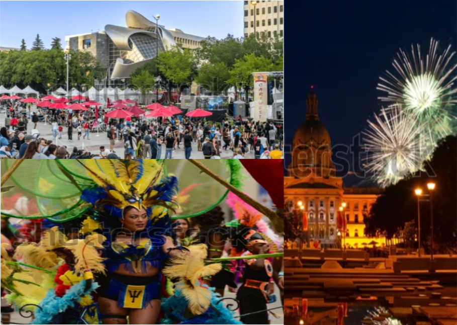
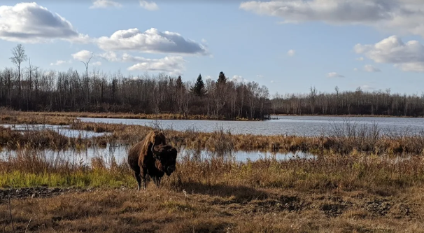
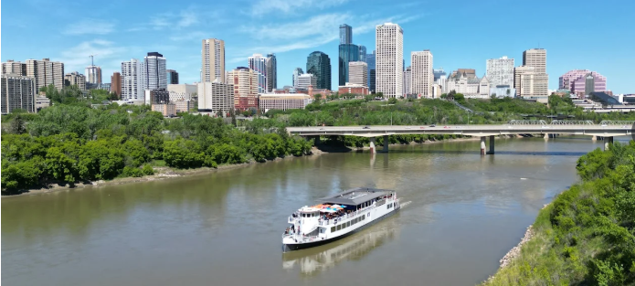

Things To Do
Canada's Festival City
Edmonton is known as Canada's ""Festival City" for good reason, it hosts an impressive lineup of vibrant, diverse festivals throughout the year that celebrate arts, culture, food, music, and community. These events draw locals and visitors alike, making Edmonton a dynamic place to experience Canadian creativity and hospitality.
Elk IsLand National Park
Elk Island National Park, just 35 - 48km east of Edmonton, is a true gem of Canadian conservation, history, and wildlife viewing.
Originally created in 1906 as an elk preserve, Elk Park became Canada's first wildlife refuge and was designated a national park in 1913.
Edmonton Riverboat
Edmonton's iconic Riverboat, known today simply as the Edmonton Riverboat, has been delighting locals and visitors since its debut in 1995 (originally named the Edmonton Queen).
Built locally and stretching about 52m long, it carries nearly 400 passengers aboard a charming paddle-wheeler along the North Saskatchewan River during the warmer months.
